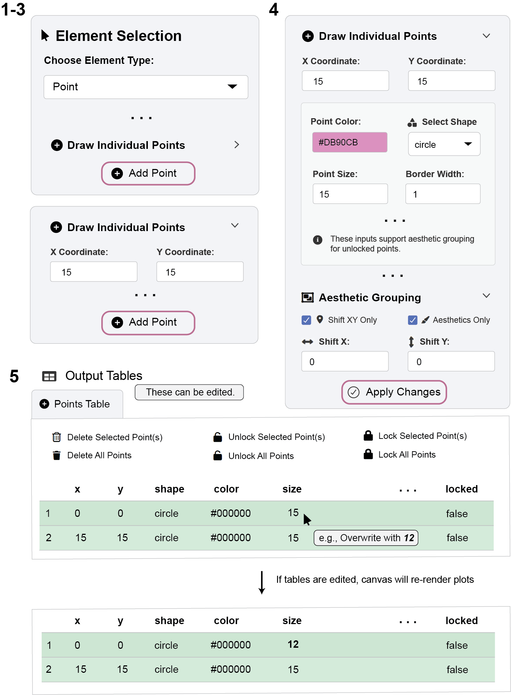
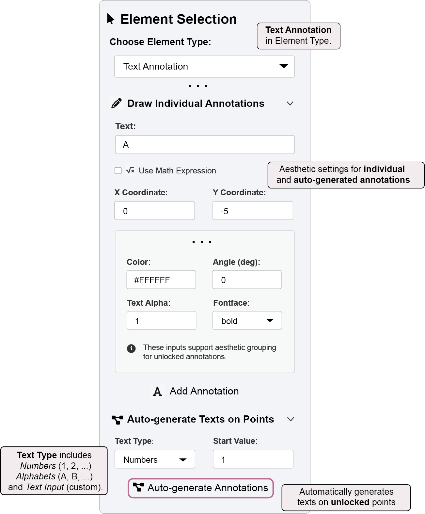
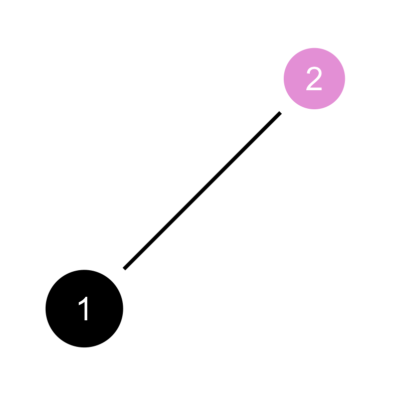

library(ggsem)
ggsem()2 App Overview
The ggsem package empowers users to dynamically interact with parameters in diagrams display relational data. The core of the package is its locally-run Shiny application, which can be launched with the code below:
2.1 Overview of the ggsem App Interface
The ggsem application provides an interactive environment for creating and customizing network diagrams and Structural Equation Modeling (SEM) visualizations (Figure 1). The interface is logically divided into two main sections: the plotting canvas on the right and the control sidebar on the left.

ggsem App interface2.2 The Plotting Canvas
This is the primary workspace where your diagrams are rendered in real-time (Figure 2). As you add elements and adjust settings in the sidebar, the visualization here updates interactively.

2.4 Quick Workflow Example
While the most powerful feature of ggsem is its ability to create and customize Structural Equation Models, I present a typical workflow to generate graphical elements such as points and lines.
2.4.1 Part 1: Draw Points

- Choose an Element Type from the dropdown (e.g., Point).
- Use the options in the Sidebar to add elements to the canvas (e.g., click “Add Point”).
Click Add Point without changing any settings. This creates a black point at the origin (x = 0, y = 0).
Create another point. But change the settings so that its coordinate is at x = 15, y = 15, and modify its color setting.
- Use the Viewport Controls to zoom and pan for a better view.
- Try modifying the aesthetics (points) of existing elements by clicking Apply Changes.
Any changes done via Apply Changes will be applied to unlocked points.
Try to Lock points to see what happens.
- Use Undo/Redo freely to experiment, as well as directly edit information in the Output Tables. Any changes will update the plotting canvas in real-time.
2.4.2 Part 2: Connect the Points with a Line

- Switch the Element Type (e.g., to Line) to connect your points, either manually or using the “Auto-generate Edges” button.
Edges are formed only between unlocked points.
Undo your actions and experiment with the locking mechanism. Try to Lock points and see if edges can be formed automatically using “Auto-generate Edges” button.
Note: Rows are green if they are unlocked. They become red if they are locked.
2.4.3 Part 3: Label Points with Texts

- Switch the Element Type (to Annotation) to label your points automatically using the “Auto-generate Annotations” button.
Aesthetics options can be accessed in Draw Individual Annotations sub-menu.
Make the labels visible by choosing a white (#FFFFFF) or similar color.
2.5 Export & Import CSV Files

Saving Your Work:
- Use the “Choose CSV to Download” dropdown to select which element type to export
- Click “Download Selected CSV” to save individual element tables
- These CSV files contain all the aesthetic properties needed to recreate your visualization
Resuming Your Work:
You can continue to work across multiple sessions or share visualizations with collaborators.
- Use the file inputs to upload previously saved CSV files
- Load Points CSV, Lines CSV, Annotations CSV, and Self-loop Arrows CSV to restore your entire diagram
2.6 Figure Export Options
ggsem allows you to download your diagrams in multiple formats:
PNG & JPEG - For presentations and web use
PDF & SVG - For publication-quality vector graphics
Custom Export Settings:
Fixed Aspect Ratio (unchecked by default) - Maintains 1:1 proportions
Specify X/Y Range - Define custom viewport dimensions for asymmetric figures
Range Inputs - Set minimum and maximum values for precise cropping
For your diagram, you can:
- Double-check if the Fixed Aspect Ratio box is unchecked.
- Do not provide any specific x or y ranges (Figure 6). Then the app will automatically determine the appropriate range.
- Save the image in PNG file.

2.7 Recreate Your Figure by Code
R-savvy users might want to access the figure in code form to freely decompose and modify each component. This is possible because ggsem relies on ggplot2 framework to render plots using these steps and CSV outputs from the app:
library(ggsem)Registered S3 method overwritten by 'tidySEM':
method from
predict.MxModel OpenMxDocumentation website of ggsem: smin95.github.io/ggsem/points <- read.csv('app_overview/points.csv')
lines <- read.csv('app_overview/lines.csv')
annotations <- read.csv('app_overview/annotations.csv')
ggsem_data <- list(points, lines, annotations) # Put them in a list, any order is fineLoad
ggsemlibrary into memory.Load the CSV files from your directory and save them into objects
pointscan store thepoints.csvfilelinescan store thelines.csvfileannotationscan store theannotations.csvfile
Create a list with the three objects stored (e.g.,
ggsem_data).Use
csv_to_ggplot()to convert the CSVs intoggplotobject (see below). Axis ranges are automatically determined similarly to how theggsemapp sets for saving image outputs.
plot1 <- csv_to_ggplot(ggsem_data)Coordinate system already present.
ℹ Adding new coordinate system, which will replace the existing one.- Save the image using
save_figure()from theggsempackage.This function has no input for width or height because the figure ratio can be disrupted if they are manually chosen (due to how
ggplot2stores graphics).save_figure()automatically determines the appropriate width and height.
save_figure('plot1.png', csv_to_ggplot(ggsem_data))
2.7.1 Modify the graphics outside the app
You can directly modify the width of the edge connecting the points at the level of the data frame lines.
lines x_start y_start x_end y_end ctrl_x ctrl_y ctrl_x2 ctrl_y2
1 2.58211 2.58211 12.79289 12.79289 NA NA NA NA
curvature_magnitude curvature_asymmetry rotate_curvature type
1 0 0 FALSE Straight Line
color end_color color_type gradient_position width alpha arrow arrow_type
1 #000000 NA Single NA 1 1 NA NA
arrow_size two_way lavaan network line_style locked group
1 NA NA FALSE FALSE solid FALSE 1The width of the line is set to 1, which we can increase to 2.
lines$width <- 2Now, as before, convert the updated CSV files to ggplot object again using csv_to_ggplot(), and save the object into an image file using save_figure().
ggsem_data <- list(points, lines, annotations) # Put them in a list, any order is fine
plot2 <- csv_to_ggplot(ggsem_data)Coordinate system already present.
ℹ Adding new coordinate system, which will replace the existing one.save_figure('plot2.png', plot2)